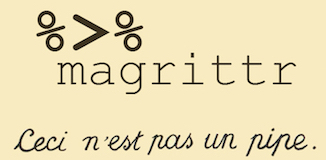

03-dplyr
Data Manipulation with dplyr
[ad] EDGE
Mentorship opportunity for women-identifying students:

Q&A
Q: what does |> mean? Do we need to know a lot of how to code those examples from class?
A: Love that you’re noting and questioning these things. We’re going to discuss this today! You do not need to know the code examples…yet. We’re going to discuss code starting today; this starts with what you’ll need to be familiar with.
Q: How to really extend the case study in our own time, when many information/analysis are already given in the lecture?
A: We’ll discuss this more! But, specifically for this first Case Study. We’re asking a very narrow question….but have a lot of variables. Is there some subgroup you could focus on? A different time window? A combination of compounds? Etc.
Q: How can we do more complex math in R?
A: Depends on what kind of complex math you’re aiming to do - a lot of complex math is built directly into R; other things would require additional packages.
Q: Where can I find the full study on the data we reviewed in class. Seems like something I’d like to read and perhaps play with the data myself.
A: We’re going to discuss the results today! But, the links are inlcuded in the notes (in what we didn’t get to yet.)
Q: How did the police officers do to detect cognitive impariedness with marijuana consumption?
A: Not great (not better than flipping a coin). We’ll discuss this today!
Q: Why were the numeric types in the cat lovers data frame labeled as ‘dbl’ instead of numeric?
A: There are multiple “levels” of object type in R (which I did not make clear in lecture b/c it’s not important for this class). Double is a subset of numeric. If you ask fortype()rather thanclass()you’ll see this difference.
Q: In class, we used |> as a pipe operator. Is it fine if we use %>% instead? Do you have a preference between the two? Thank you!
A: We’ll discuss this today - no preference!
Q: My github username is pretty weird. How are the professor and TA going to know that it is me if my username does not resemble my actual name?
A: On your first lab, we ask you to put your name in the author field. We use that to match students to their GH usernames!
Course Announcements
Due Dates:
- Lab 01 due Thursday (10/10 11:59 PM; push to GH)
- HW01 now available; due Monday (10/14; 11:59 PM)
- Lecture Participation survey “due” after class
. . .
Notes:
- No Lecture on Thursday this week
- Discuss: GH<->RStudio issue (
OpenSSL version mismatch. Built against 30000020, you have 30300020) - Regular labs resume this week
- Mention: waitlist & dropping
Suggested Reading
R4DS:
- Chapter 5: Data Transformation
- Chapter 16: Factors
Agenda
dplyr- philosophy
- pipes
- common operations
- CS01 Wrangling
Philosophy
dplyris a grammar of data manipulation, providing a consistent set of verbs that help you solve the most common data manipulation challenges
Source: dplyr.tidyverse.org
Pipes
The pipe in baseR
|>should be read as “and then”- for example “Wake up |> brush teeth” would be read as “wake up and then brush teeth”
Where does the name come from?
The pipe operator was first implemented in the package magrittr.


You will see this frequently in code online. It’s equivalent to |>.
How does a pipe work?
- You can think about the following sequence of actions - find key, unlock car, start car, drive to school, park.
. . .
- Expressed as a set of nested functions in R pseudocode this would look like:
park(drive(start_car(find("keys")), to = "campus")). . .
- Writing it out using pipes give it a more natural (and easier to read) structure:
find("keys") |>
start_car() |>
drive(to = "campus") |>
park(). . .
(Reminder to comment on indentation/alignment)
Data
To get started with lecture code: library(tidyverse)
Whole Blood (WB) Data from THC Study
WB <- read_csv("https://github.com/ShanEllis/datasets/raw/refs/heads/master/Blood.csv")
Important
We’re using these data to demonstrate the basic principles of dplyr and tidyr before we get to how to specifically clean our CS01 data.
. . .
Read the data in so you can follow along now!
Put a green sticky on the front of your computer when you’re done. Put a pink if you want help/have a question.
Variables
View the names of variables via:
names(WB) [1] "ID" "Treatment" "Group" "FLUID TYPE"
[5] "Timepoint" "CBN" "CBD" "THC"
[9] "11-OH-THC" "THC-COOH" "THC-COOH-Gluc" "CBG"
[13] "THC-V" "time.from.start"Viewing your data
In the Environment, click on the name of the data frame to view it in the data viewer (or use the
Viewfunction)Use the
glimpsefunction to take a peek
glimpse(WB)Rows: 1,525
Columns: 14
$ ID <chr> "11255", "11255", "11255", "11255", "11255", "11255", …
$ Treatment <chr> "5.90%", "5.90%", "5.90%", "5.90%", "5.90%", "5.90%", …
$ Group <chr> "Occasional user", "Occasional user", "Occasional user…
$ `FLUID TYPE` <chr> "WB", "WB", "WB", "WB", "WB", "WB", "WB", "WB", "WB", …
$ Timepoint <chr> "T1", "T2A", "T2B", "T3A", "T3B", "T4A", "T4B", "T5A",…
$ CBN <dbl> 0.0, 2.8, 0.6, 0.0, 0.0, 0.0, 0.0, 0.0, 0.0, 0.0, 4.6,…
$ CBD <dbl> 0, 0, 0, 0, 0, 0, 0, 0, 0, 0, 0, 0, 0, 0, 0, 0, 0, 0, …
$ THC <dbl> 0.5, 32.4, 5.1, 3.2, 1.8, 1.2, 0.9, 0.8, 0.6, 0.0, 46.…
$ `11-OH-THC` <dbl> 0.0, 5.4, 2.4, 1.8, 1.4, 0.0, 0.0, 0.0, 0.0, 0.0, 7.7,…
$ `THC-COOH` <dbl> 5.7, 13.5, 11.7, 9.7, 8.7, 6.7, 6.8, 6.8, 6.3, 1.9, 13…
$ `THC-COOH-Gluc` <dbl> 4.9, 4.4, 6.2, 8.4, 8.9, 8.2, 7.5, 7.1, 6.1, 2.1, 2.7,…
$ CBG <dbl> 0.0, 1.2, 0.0, 0.0, 0.0, 0.0, 0.0, 0.0, 0.0, 0.0, 2.0,…
$ `THC-V` <dbl> 0, 0, 0, 0, 0, 0, 0, 0, 0, 0, 0, 0, 0, 0, 0, 0, 0, 0, …
$ time.from.start <dbl> -27, 15, 69, 111, 156, 236, 283, 315, 360, -10, 20, 73…dplyr
A Grammar of Data Manipulation
dplyr is based on the concepts of functions as verbs that manipulate data frames.
Single data frame functions / verbs:
filter: pick rows matching criteriamutate: add new variablesselect: pick columns by namerename: rename specific columnssummarize: reduce variables to valuesarrange: reorder rowsdistinct: filter for unique rowspull: grab a column as a vectorsample_n/sample_frac: randomly sample rowsslice: pick rows using index(es)- … (many more)
dplyr rules for functions
First argument is always a data frame
Subsequent arguments say what to do with that data frame
Always return a data frame
Do not modify in place
Performance via lazy evaluation
Filter rows with filter
- Select a subset of rows in a data frame.
- Easily filter for many conditions at once.
filter (single condition)
for only measurements from Occasional users
# A tibble: 750 × 14
ID Treatment Group `FLUID TYPE` Timepoint CBN CBD THC `11-OH-THC`
<chr> <chr> <chr> <chr> <chr> <dbl> <dbl> <dbl> <dbl>
1 11255 5.90% Occasio… WB T1 0 0 0.5 0
2 11255 5.90% Occasio… WB T2A 2.8 0 32.4 5.4
3 11255 5.90% Occasio… WB T2B 0.6 0 5.1 2.4
4 11255 5.90% Occasio… WB T3A 0 0 3.2 1.8
5 11255 5.90% Occasio… WB T3B 0 0 1.8 1.4
6 11255 5.90% Occasio… WB T4A 0 0 1.2 0
7 11255 5.90% Occasio… WB T4B 0 0 0.9 0
8 11255 5.90% Occasio… WB T5A 0 0 0.8 0
9 11255 5.90% Occasio… WB T5B 0 0 0.6 0
10 T0316 13.40% Occasio… WB T1 0 0 0 0
# ℹ 740 more rows
# ℹ 5 more variables: `THC-COOH` <dbl>, `THC-COOH-Gluc` <dbl>, CBG <dbl>,
# `THC-V` <dbl>, time.from.start <dbl>filter (mutiple conditions)
for only measurements from Occasional users where THC > 100
# A tibble: 2 × 14
ID Treatment Group `FLUID TYPE` Timepoint CBN CBD THC `11-OH-THC`
<chr> <chr> <chr> <chr> <chr> <dbl> <dbl> <dbl> <dbl>
1 11467 5.90% Occasion… WB T2A 14.5 0 156. 15.5
2 28344 5.90% Occasion… WB T2A 11 0 126. 12.2
# ℹ 5 more variables: `THC-COOH` <dbl>, `THC-COOH-Gluc` <dbl>, CBG <dbl>,
# `THC-V` <dbl>, time.from.start <dbl>select` a range of variables
# A tibble: 1,525 × 4
ID Treatment Group `FLUID TYPE`
<chr> <chr> <chr> <chr>
1 11255 5.90% Occasional user WB
2 11255 5.90% Occasional user WB
3 11255 5.90% Occasional user WB
4 11255 5.90% Occasional user WB
5 11255 5.90% Occasional user WB
6 11255 5.90% Occasional user WB
7 11255 5.90% Occasional user WB
8 11255 5.90% Occasional user WB
9 11255 5.90% Occasional user WB
10 T0686 5.90% Frequent user WB
# ℹ 1,515 more rowsID:FLUID TYPE: take all columns fromIDthroughFLUID TYPEFLUID TYPEhas backticks due to space in column name
select to keep range + others
# A tibble: 1,525 × 6
ID Treatment Group `FLUID TYPE` THC time.from.start
<chr> <chr> <chr> <chr> <dbl> <dbl>
1 11255 5.90% Occasional user WB 0.5 -27
2 11255 5.90% Occasional user WB 32.4 15
3 11255 5.90% Occasional user WB 5.1 69
4 11255 5.90% Occasional user WB 3.2 111
5 11255 5.90% Occasional user WB 1.8 156
6 11255 5.90% Occasional user WB 1.2 236
7 11255 5.90% Occasional user WB 0.9 283
8 11255 5.90% Occasional user WB 0.8 315
9 11255 5.90% Occasional user WB 0.6 360
10 T0686 5.90% Frequent user WB 0 -10
# ℹ 1,515 more rowsselect to exclude variables
# A tibble: 1,525 × 13
ID Treatment Group `FLUID TYPE` CBN CBD THC `11-OH-THC` `THC-COOH`
<chr> <chr> <chr> <chr> <dbl> <dbl> <dbl> <dbl> <dbl>
1 11255 5.90% Occasi… WB 0 0 0.5 0 5.7
2 11255 5.90% Occasi… WB 2.8 0 32.4 5.4 13.5
3 11255 5.90% Occasi… WB 0.6 0 5.1 2.4 11.7
4 11255 5.90% Occasi… WB 0 0 3.2 1.8 9.7
5 11255 5.90% Occasi… WB 0 0 1.8 1.4 8.7
6 11255 5.90% Occasi… WB 0 0 1.2 0 6.7
7 11255 5.90% Occasi… WB 0 0 0.9 0 6.8
8 11255 5.90% Occasi… WB 0 0 0.8 0 6.8
9 11255 5.90% Occasi… WB 0 0 0.6 0 6.3
10 T0686 5.90% Freque… WB 0 0 0 0 1.9
# ℹ 1,515 more rows
# ℹ 4 more variables: `THC-COOH-Gluc` <dbl>, CBG <dbl>, `THC-V` <dbl>,
# time.from.start <dbl>select can rename columns
# A tibble: 1,525 × 6
ID Treatment Group `FLUID TYPE` THC start_time
<chr> <chr> <chr> <chr> <dbl> <dbl>
1 11255 5.90% Occasional user WB 0.5 -27
2 11255 5.90% Occasional user WB 32.4 15
3 11255 5.90% Occasional user WB 5.1 69
4 11255 5.90% Occasional user WB 3.2 111
5 11255 5.90% Occasional user WB 1.8 156
6 11255 5.90% Occasional user WB 1.2 236
7 11255 5.90% Occasional user WB 0.9 283
8 11255 5.90% Occasional user WB 0.8 315
9 11255 5.90% Occasional user WB 0.6 360
10 T0686 5.90% Frequent user WB 0 -10
# ℹ 1,515 more rows“Save” when you make dataset changes
- decide if you want to overwrite original or create new
WB_sub <- WB |>
select(ID:`FLUID TYPE`, THC, start_time = time.from.start)Check before you move on
Always check your changes and confirm code did what you wanted it to do
names(WB_sub)[1] "ID" "Treatment" "Group" "FLUID TYPE" "THC"
[6] "start_time"rename specific columns
Useful for correcting typos, and renaming to make variable names shorter and/or more informative
- Original names:
names(WB_sub)[1] "ID" "Treatment" "Group" "FLUID TYPE" "THC"
[6] "start_time". . .
mutate to add new variables
- Note assigning back out to itself with new column
# A tibble: 1,525 × 7
ID Treatment Group fluid_type THC start_time baseline
<chr> <chr> <chr> <chr> <dbl> <dbl> <lgl>
1 11255 5.90% Occasional user WB 0.5 -27 TRUE
2 11255 5.90% Occasional user WB 32.4 15 FALSE
3 11255 5.90% Occasional user WB 5.1 69 FALSE
4 11255 5.90% Occasional user WB 3.2 111 FALSE
5 11255 5.90% Occasional user WB 1.8 156 FALSE
6 11255 5.90% Occasional user WB 1.2 236 FALSE
7 11255 5.90% Occasional user WB 0.9 283 FALSE
8 11255 5.90% Occasional user WB 0.8 315 FALSE
9 11255 5.90% Occasional user WB 0.6 360 FALSE
10 T0686 5.90% Frequent user WB 0 -10 TRUE
# ℹ 1,515 more rowsYour Turn
How many baseline measurements had a THC value greater than zero?
Put a green sticky on the front of your computer when you’re done. Put a pink if you want help/have a question.
group_by + summarize to reduce variables to values
The values are summarized in a data frame:
`summarise()` has grouped output by 'Treatment'. You can override using the
`.groups` argument.# A tibble: 6 × 3
# Groups: Treatment [3]
Treatment Group count
<chr> <chr> <int>
1 13.40% Frequent user 258
2 13.40% Occasional user 243
3 5.90% Frequent user 266
4 5.90% Occasional user 247
5 Placebo Frequent user 251
6 Placebo Occasional user 260count to group by then count
Same as last example, but summarize, not limited to counting
WB_sub |>
count(Treatment, Group)# A tibble: 6 × 3
Treatment Group n
<chr> <chr> <int>
1 13.40% Frequent user 258
2 13.40% Occasional user 243
3 5.90% Frequent user 266
4 5.90% Occasional user 247
5 Placebo Frequent user 251
6 Placebo Occasional user 260Your Turn
You’re starting to work on the case study and you get curious. How many non-baseline observations have a THC > 50. Does this number differ by treatment or group?
Put a green sticky on the front of your computer when you’re done. Put a pink if you want help/have a question.
and arrange to order rows
# A tibble: 1,525 × 7
ID Treatment Group fluid_type THC start_time baseline
<chr> <chr> <chr> <chr> <dbl> <dbl> <lgl>
1 T0686 5.90% Frequent user WB 0 -10 TRUE
2 11258 13.40% Frequent user WB 0 -25 TRUE
3 11258 13.40% Frequent user WB 0 375 FALSE
4 T0316 13.40% Occasional user WB 0 -78 TRUE
5 11234 Placebo Frequent user WB 0 -64 TRUE
6 11234 Placebo Frequent user WB 0 12 FALSE
7 11234 Placebo Frequent user WB 0 85 FALSE
8 11234 Placebo Frequent user WB 0 126 FALSE
9 11234 Placebo Frequent user WB 0 210 FALSE
10 11234 Placebo Frequent user WB 0 249 FALSE
# ℹ 1,515 more rows. . .
If you wanted to arrange these in descending order what would you add to the code?
distinct to filter for unique rows
How many unique participants?
distinct has a .keep_all parameter
# A tibble: 190 × 7
ID Treatment Group fluid_type THC start_time baseline
<chr> <chr> <chr> <chr> <dbl> <dbl> <lgl>
1 11255 5.90% Occasional user WB 0.5 -27 TRUE
2 T0686 5.90% Frequent user WB 0 -10 TRUE
3 11258 13.40% Frequent user WB 0 -25 TRUE
4 11264 13.40% Frequent user WB 2.4 -30 TRUE
5 11263 5.90% Frequent user WB 3.2 -26 TRUE
6 T0316 13.40% Occasional user WB 0 -78 TRUE
7 11270 Placebo Frequent user WB 4.6 -70 TRUE
8 11234 Placebo Frequent user WB 0 -64 TRUE
9 11323 Placebo Occasional user WB 0.8 -71 TRUE
10 10972 13.40% Frequent user WB 3.9 -72 TRUE
# ℹ 180 more rows. . .
Which observation did dplyr decide to keep?
Factors
Factors
Factor objects are how R stores data for categorical variables (fixed numbers of discrete values).
(x = factor(c("BS", "MS", "PhD", "MS")))[1] BS MS PhD MS
Levels: BS MS PhDglimpse(x) Factor w/ 3 levels "BS","MS","PhD": 1 2 3 2typeof(x)[1] "integer". . .
In our data, which variables should be treated as factors?
Why does it matter?
WB_sub |>
filter(start_time > 0, start_time < 60) |>
ggplot(mapping = aes(x = Treatment, y=THC)) +
geom_boxplot()Note: we’ll discuss this specific code soon.
Use forcats to manipulate factors
fct_recode- treat as factor; give new labelsfct_relevel- change order of levels
WB_sub <- WB_sub |>
mutate(Treatment = fct_recode(Treatment,
"5.9% THC (low dose)" = "5.90%",
"13.4% THC (high dose)" = "13.40%"),
Treatment = fct_relevel(Treatment, "Placebo", "5.9% THC (low dose)")). . .
(same plotting code as earlier)
WB_sub |>
filter(start_time > 0, start_time < 60) |>
ggplot(mapping = aes(x = Treatment, y=THC)) +
geom_boxplot()
forcats functionality
R uses factors to handle categorical variables, variables that have a fixed and known set of possible values. Historically, factors were much easier to work with than character vectors, so many base R functions automatically convert character vectors to factors.
factors are still useful when you have true categorical data, and when you want to override the ordering of character vectors to improve display. The goal of the
forcatspackage is to provide a suite of useful tools that solve common problems with factors.
Source: forcats.tidyverse.org
CS01: Wrangling
Data Cleaning
WB <- WB |>
mutate(Treatment = fct_recode(Treatment,
"5.9% THC (low dose)" = "5.90%",
"13.4% THC (high dose)" = "13.40%"),
Treatment = fct_relevel(Treatment, "Placebo", "5.9% THC (low dose)")) |>
janitor::clean_names() |>
rename(thcoh = x11_oh_thc,
thccooh = thc_cooh,
thccooh_gluc = thc_cooh_gluc,
thcv = thc_v)What is this code accomplishing?
Data Cleaning
WB |>
mutate(timepoint = case_when(time_from_start < 0 ~ "pre-smoking",
time_from_start > 0 & time_from_start <= 30 ~ "0-30 min",
time_from_start > 30 & time_from_start <= 70 ~ "31-70 min",
time_from_start > 70 & time_from_start <= 100 ~ "71-100 min",
time_from_start > 100 & time_from_start <= 180 ~ "101-180 min",
time_from_start > 180 & time_from_start <= 210 ~ "181-210 min",
time_from_start > 210 & time_from_start <= 240 ~ "211-240 min",
time_from_start > 240 & time_from_start <= 270 ~ "241-270 min",
time_from_start > 270 & time_from_start <= 300 ~ "271-300 min",
time_from_start > 300 ~ "301+ min"))# A tibble: 1,525 × 14
id treatment group fluid_type timepoint cbn cbd thc thcoh thccooh
<chr> <fct> <chr> <chr> <chr> <dbl> <dbl> <dbl> <dbl> <dbl>
1 11255 5.9% THC (l… Occa… WB pre-smok… 0 0 0.5 0 5.7
2 11255 5.9% THC (l… Occa… WB 0-30 min 2.8 0 32.4 5.4 13.5
3 11255 5.9% THC (l… Occa… WB 31-70 min 0.6 0 5.1 2.4 11.7
4 11255 5.9% THC (l… Occa… WB 101-180 … 0 0 3.2 1.8 9.7
5 11255 5.9% THC (l… Occa… WB 101-180 … 0 0 1.8 1.4 8.7
6 11255 5.9% THC (l… Occa… WB 211-240 … 0 0 1.2 0 6.7
7 11255 5.9% THC (l… Occa… WB 271-300 … 0 0 0.9 0 6.8
8 11255 5.9% THC (l… Occa… WB 301+ min 0 0 0.8 0 6.8
9 11255 5.9% THC (l… Occa… WB 301+ min 0 0 0.6 0 6.3
10 T0686 5.9% THC (l… Freq… WB pre-smok… 0 0 0 0 1.9
# ℹ 1,515 more rows
# ℹ 4 more variables: thccooh_gluc <dbl>, cbg <dbl>, thcv <dbl>,
# time_from_start <dbl>What is this code accomplishing?
. . .
Note: This code could have been combined with the above…I just wanted to discuss it for simplicity in lecture separately.
CS01 Data Cleaning
We’ve cleaned up the whole blood data. Your lab will guide you to clean up the oral fluid and breath data. (It will be similar, but not the same as this.)
Recap
- Understand the basic tenants of
dplyr - Describe and utilize the pipe in workflows
- Describe and use common
verbs(functions) - Understand the documentation for
dplyrfunctions - Understand what factors are an that
forcatsis a package with functionality for working with them - Describe the wrangling carried out on the CS01 WB dataset